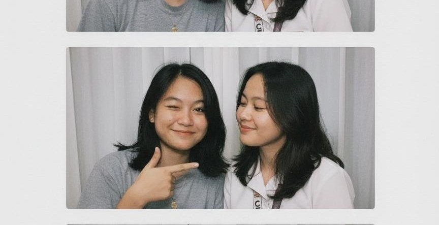
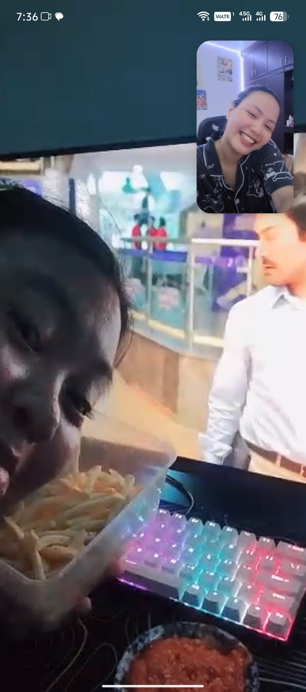
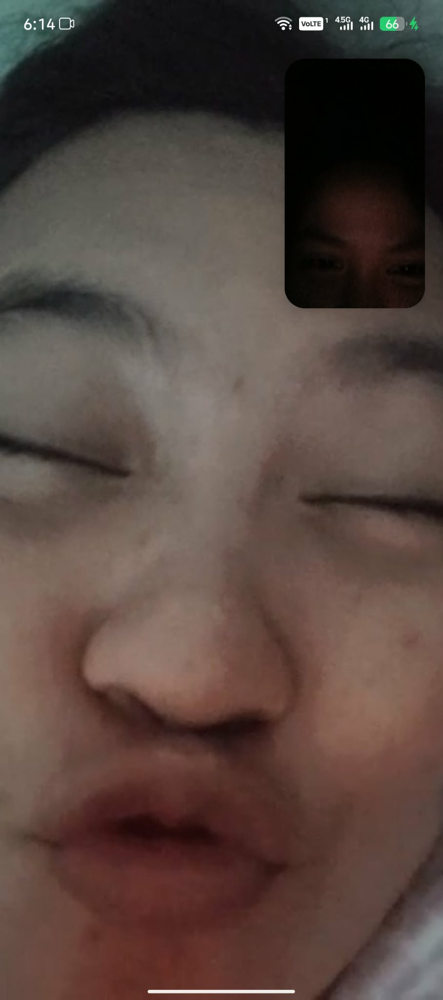
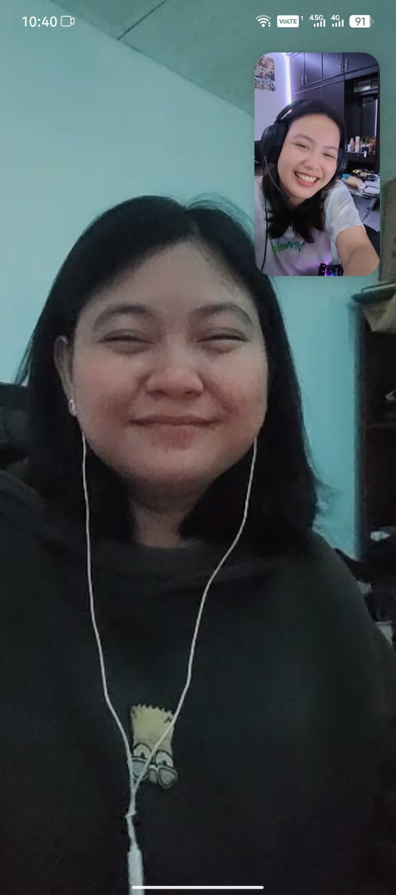
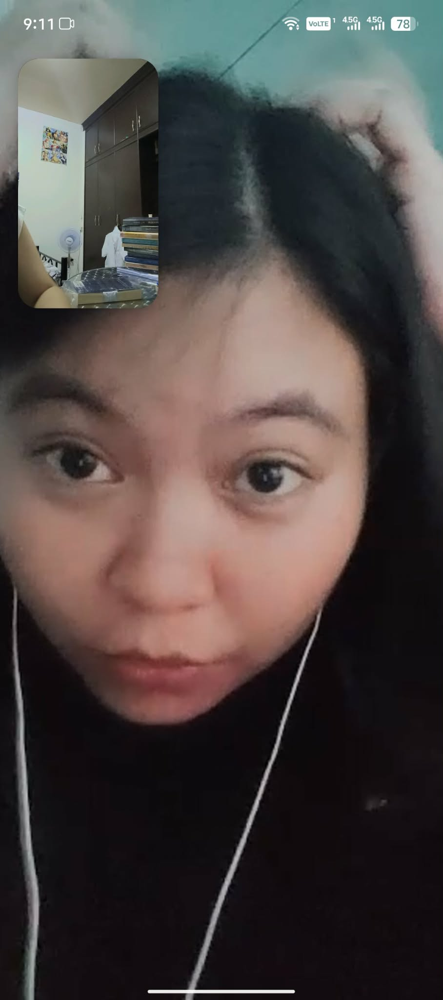
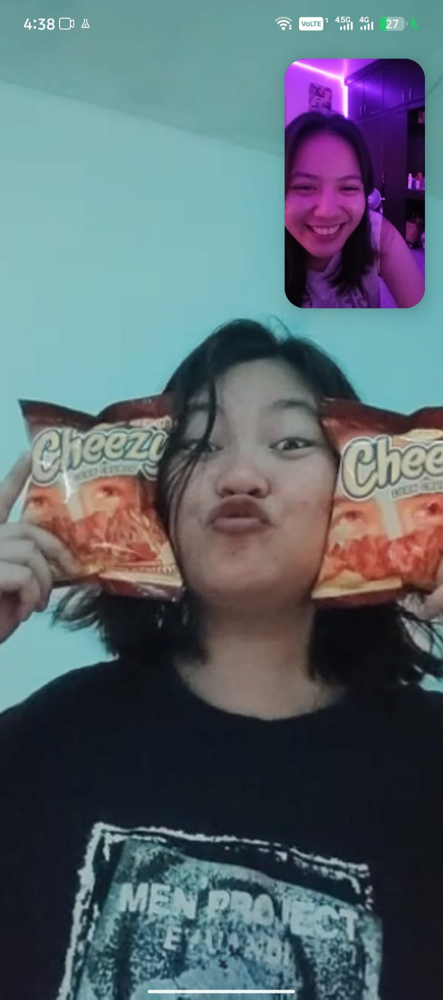
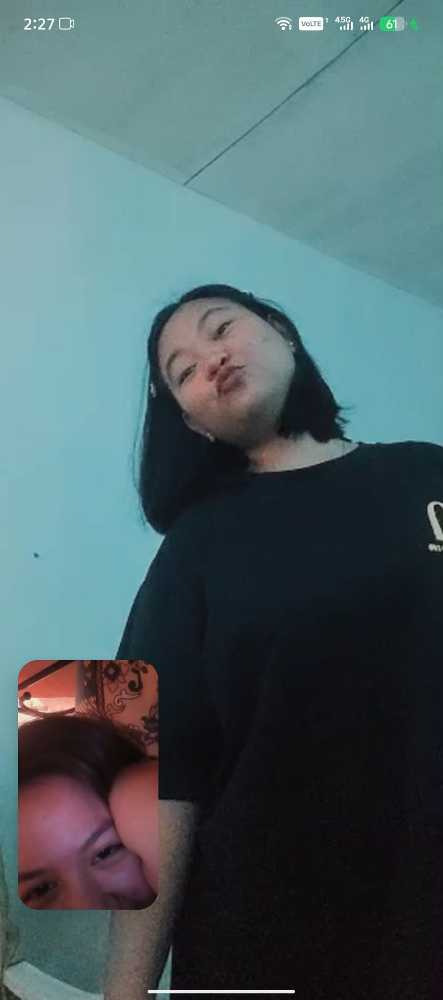
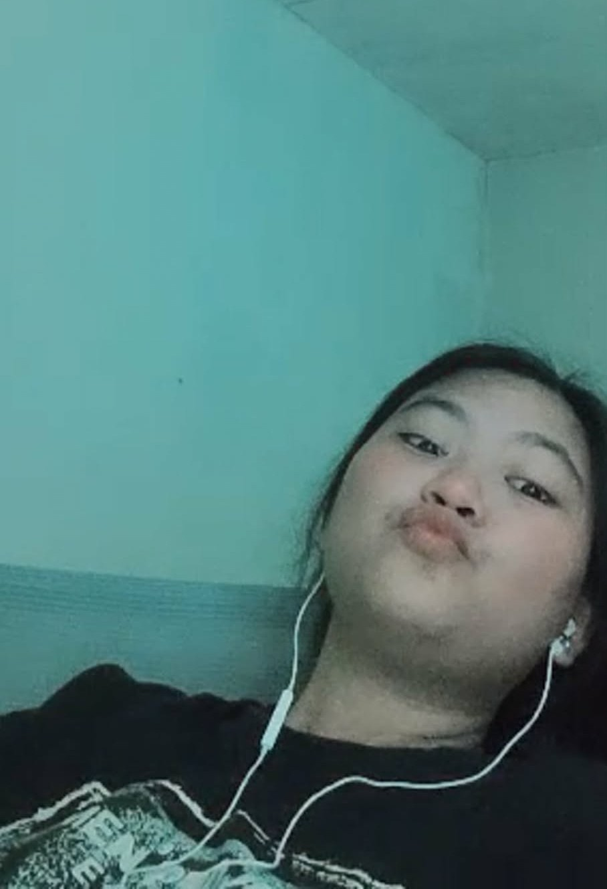
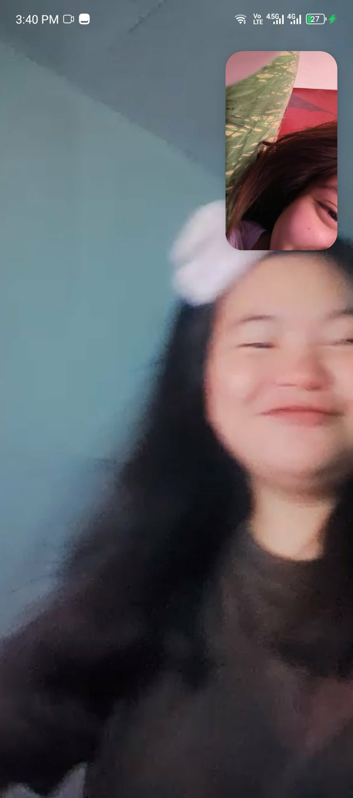
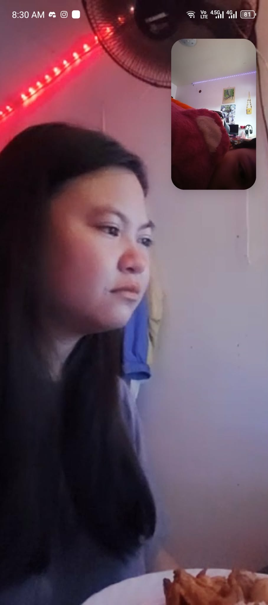

Loading...










Hi, my love! can you believe it's almost the end of the year?? parang kailan lang patay na patay ako sayo. I can't help but get emotional whenever i think of us, of everything we've been through. Yung mga asaran, laughter, kwentuhan natin na minsan wala namang kwenta, the little fights, quiet moments, tsaka kapag nanonood tayo together, and mga kakulitan natin sa call that somehow mean the world. Looking back, I'm amazed at how far we've come and how mych we've grown together. Ang dami natin memories, some are small, some are big, pero each one a thread woven into the tapestry of us. I remember when ayoko mag laro kapag hindi ka mag lalaro kasi i really enjoy playing when you're in it. I remember when we used to call sa discord that streched into hours, when it felt like the world shrank to just you and me. Those moments, simple as they were, but it felt inifinite like time itself paused just to let us exist in our own little universe. I remember laughing until my stomach hurt whenever we hike on roblox. Those moments, though fleeting, are etched into me forever. And yes, there were the challenges too, yung mga away bati at di pag kakaintindihan moments natin when things felt heavier than they should. But even in those moments, i saw us. I saw how much we care, how much we're willing to work through, and how much we value each other.
I think about all the times i've caught myself smiling out of nowhere, and it's always because of you. Always. Some silly clip of yours from my photos, some are memories that popped into my head, some are the text you sent that made me laugh or feel warm all over. I love how natural it feels to be around you, how effortless it is to share my thoughts, my fears, my dreams, my jokes, my randomness, my heart with you. I want you to know that every memory we've made, every little moments, has shaped me. You've shaped me. And i hope, in some way, i've done the same for you. As we close this chapter of the year, i want to pause and honor all that we've shared. I want to tell you how proud i am of you, of us, of what we've built, of the love that continues to grow despite life's unpredictability. So, here's to us, to everything we've been, to everything we are, and to everthing we will be. Here's to ending this year with gratitude and love, and to stepping into the new one with hope, excitement, adventures, and hearts full of each other.
i love you more than words can say, more than time can measure, more than life itself.
Happy 5 months of happiness, my love.
I think about all the times i've caught myself smiling out of nowhere, and it's always because of you. Always. Some silly clip of yours from my photos, some are memories that popped into my head, some are the text you sent that made me laugh or feel warm all over. I love how natural it feels to be around you, how effortless it is to share my thoughts, my fears, my dreams, my jokes, my randomness, my heart with you. I want you to know that every memory we've made, every little moments, has shaped me. You've shaped me. And i hope, in some way, i've done the same for you. As we close this chapter of the year, i want to pause and honor all that we've shared. I want to tell you how proud i am of you, of us, of what we've built, of the love that continues to grow despite life's unpredictability. So, here's to us, to everything we've been, to everything we are, and to everthing we will be. Here's to ending this year with gratitude and love, and to stepping into the new one with hope, excitement, adventures, and hearts full of each other.
i love you more than words can say, more than time can measure, more than life itself.
Happy 5 months of happiness, my love.
These remind me of you.
I wanted to share thsese, please take a moment to listen.
Some silly clips of you that I absolutely love.
Every time i watch them, i can’t help but smile and miss you a lil bit extra. Just wanted to share them with you because you make even the smallest things feel unforgettable.
Countdown
Happy New Year!
Happy new year, my love! We made it! The year has just began, and my heart already feels full because i get to start it with you. Before the days rush forward and time begins doing what it always does, i want to pause here, and tell you how much it means to me that you are here. That we are here. out of all the possibilities this new year could hold, the greatest gift is knowing i get to spend another one with you. hehe.
Starting this year with you feels like exhailing after holding my breath for a long time. You are the familiar warmth i return to. Another year with you means another year of growing, either it is gentle, or painful, but one thing I'm sure of, it is always meaningful. It means learning each other again and again, because love is never static. I hope this year we continue to grow not just closer, but kinder to each other and to ourselves. I hope we create moments that don't need to be big to be unforgettable. I hope for mornings that begin slowly, nights filled with silly conversation, and days where even doing nothing together feels like everthing. i hope we laugh more, at ourselves, at life, at the goofy momemnts that makes us who we are. I hope we hold onto playfulness, even when resposnibilities tries to weigh us down. I hope we continue to choose each other, especially on the days when it would be easier not to.
I don;t know everthing this year will bring, but i know what i want to bring into it. It is honesty, effort, tenderness, and commitment. I want to be someone who shows up for you, not only when it's easy, but when it matters most. I want to be someone you feel safe with, someone you can lean on. So, if this year is a journey, then you are where i begin and where i hope to arrive again and again. Starting with you is my greatest blessing.
See you soon, my love. I love you.
Happy new year, my love! We made it! The year has just began, and my heart already feels full because i get to start it with you. Before the days rush forward and time begins doing what it always does, i want to pause here, and tell you how much it means to me that you are here. That we are here. out of all the possibilities this new year could hold, the greatest gift is knowing i get to spend another one with you. hehe.
Starting this year with you feels like exhailing after holding my breath for a long time. You are the familiar warmth i return to. Another year with you means another year of growing, either it is gentle, or painful, but one thing I'm sure of, it is always meaningful. It means learning each other again and again, because love is never static. I hope this year we continue to grow not just closer, but kinder to each other and to ourselves. I hope we create moments that don't need to be big to be unforgettable. I hope for mornings that begin slowly, nights filled with silly conversation, and days where even doing nothing together feels like everthing. i hope we laugh more, at ourselves, at life, at the goofy momemnts that makes us who we are. I hope we hold onto playfulness, even when resposnibilities tries to weigh us down. I hope we continue to choose each other, especially on the days when it would be easier not to.
I don;t know everthing this year will bring, but i know what i want to bring into it. It is honesty, effort, tenderness, and commitment. I want to be someone who shows up for you, not only when it's easy, but when it matters most. I want to be someone you feel safe with, someone you can lean on. So, if this year is a journey, then you are where i begin and where i hope to arrive again and again. Starting with you is my greatest blessing.
See you soon, my love. I love you.